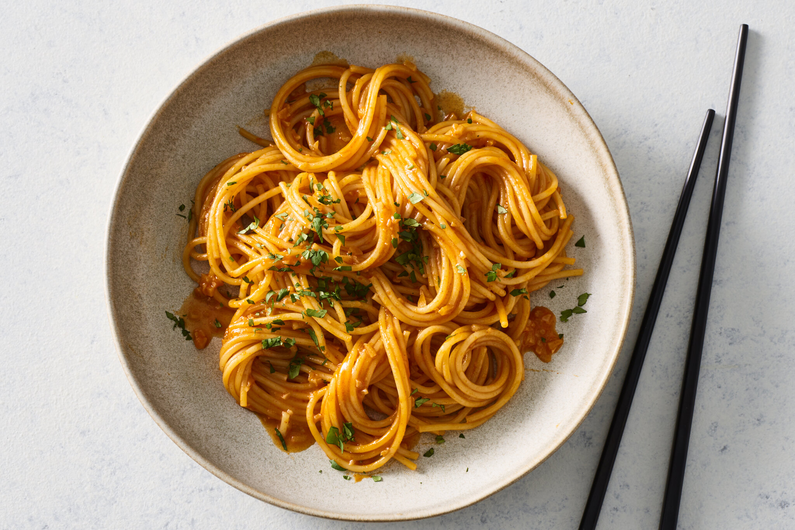

Gochujang Butter Noodles

Description:
A quick, delicious and spicy recipe perfect for a cozy night in!
Ingredients:
- 7 ounces of long noodles
- 4 tablespoons of salted butter
- 5 garlic cloves
- 1/4 tablespoon of salt
- 1/4 tablespoon of black pepper
- 2 tablespoons of gochujang paste
- 2 tablespoons of honey
- 1/4 cup of pasta water
- 1 chopped green onion
Preparation:
- In a pan over medium low heat, melt 3 tbsp butter, add garlic and sauté the minced garlic for 30 seconds.
- Add in the salt, pepper, gochujang, honey, and rice wine vinegar.
- Cook for 3 mins over medium low heat.
- Add in the al dente pasta along with 1 tbsp of butter and the pasta water.
- Cook and combine for 3-5 mins or until the starch thickens a bit and the pasta absorbs the sauce.
- Serve with green onions and enjoy!
Source
Back